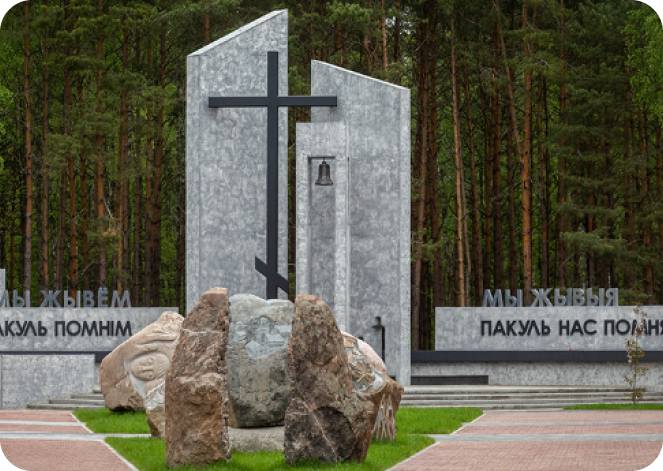

Открыть карту
Открыть карту
Единственный в Беларуси фарфоровый завод работает в Добруше
Самые известные объекты Гомельской Области
Самые известные достопримечательности
Мемориальный комплекс «Ола»
Светлогорск

Ола — бывшая деревня в Светлогорской районе Гомельской области. Была известна с конца 18 века, в 1926 году в ней проживало 79 человек, а перед войной уже 168 человек. Во время Великой Отечественной войны жители соседних деревень прятались в деревне Ола и в близлежащем лесу, спасаясь от фашистов.
В 2020 году был открыт мемориальный комплекс «Ола».
Самые известные достопримечательности
Дворец Румянцевых и Паскевичей
Гомель
Дворец Румянцевых и Паскевичей – это уникальное архитектурное сооружение в стиле классицизма в самом сердце Гомеля. Своё название он получил от фамилий владельцев, которые были известными государственными деятелями.

Строительство дворца началось в 1772 г.
Самые известные Культурные ценности
Городище на «Замковой Горе»
Мозырь
Городище на «Замковой Горе» в Мозыре – место, где начинался город и стоял грандиозный замок из дерева на радость местным жителям и приезжим гостям. Городище занимало такую же территорию, что и современное, и статно возвышалось над Припятью, омывавшей его подножие и надежно защищавшей от нежеланных гостей.

Самые известные Культурные ценности
Историко-этнографический музей
Чечерск
Чечерский историко-этнографический музей располагается в самой главной достопримечательности города – ратуши. Построена она была из дерева сразу после получения городом права на самоуправление в 1511 году. Современный облик ратуша приобрела в 18 веке.
.png)
Старейшие города
980 год
Туров
Туров - древнейший город Гомельской области, впервые упоминается в "Повести временных лет" в 980 году.О том, что Туров - один из старейших центров письменности и летописания, свидетельствует найденный здесь в 1866 году фрагмент "Евангелия" XI века, самой древней книги на территории Беларуси.
.png)
Старейшие города
1142 год
Гомель
Гомель также входит в число древнейших городов Беларуси. Впервые Гомий - таково древнее название Гомеля - упомянут в Ипатьевской летописи от 1142 года. Около 1335 года Гомель вошел в состав Великого княжества Литовского.
.png)
Известные люди
Александр Анатольевич Исачёв
Калинковичский район
Александр Исачев - один из самых необычных белорусских художников 20 века. В его картинах сплелись мифология, христианство и эротика. За свою жизнь А. Исачёв создал около 500 картин, большинство из которых были вывезены в Швецию, Германию, Францию, Израиль и США.
.png)
Известные люди
Мележ Иван Павлович
Хойникский район, Глинище
Мележ Иван Павлович - Белорусский советский прозаик, драматург, публицист. Автор ряда литературно-критических статей, очерков. По произведениям И. Мележа поставлены спектакли, сняты художественные фильмы.
.png)
Промышленность
ОАО «Мозырский нефтеперерабатывающий завод»
Мозырь
«Мо́зырский нефтеперерабатывающий завод» — одно из двух белорусских нефтеперерабатывающих предприятий. Завод расположен в промышленной зоне Мозыря в 15 км к югу от жилых массивов города, для связи завода с городом 1988 году была запущена трамвайная система.
.png)
Промышленность
Белорусский металлургический завод(БМЗ)
Жлобин
Белорусский металлургический завод — предприятие чёрной металлургии в городе Жлобине в Республике Беларусь. Численность персонала составляет около 11 тысяч человек.
.png)
Промышленность
Мемориал «Вечный огонь»
Гомель
От огня проходит аллея с мемориальными досками, на которых высечены имена павших героев. Здесь захоронены герои Советского союза Иван Антошкин и Иван Лапин. Мемориальный комплекс – традиционное место проведение праздничных мероприятий ко дню победы.
.png)
Промышленность
Памятник В. И. Ленину
Гомель
Установку памятника Ленину в Гомеле приурочили к 40-летию Белорусской ССР. Скульптура находится на одноименной площади. Сам памятник отлили из бронзы, его высота – 6 метров. Перед памятником разместили белоснежные ящики-клумбы, а по бокам – две небольшие арки.
.png)
Озёра
Белое озеро
Житковичи
Белое озеро расположено к северо-западу от города Житковичи. Это довольно большой водоем. Его длина – 2,6 км., а общая площадь – около 1,56 кв. км., а глубина в отдельных местах доходит до 9 м
.png)
Озёра
Крушиновское озеро
Рогачевский р-н
Окрестные леса богаты разнообразной ягодой и грибами. Озеро окружено (кроме востока и юга) широкой заболоченной поймой, к которой примыкают обширные, местами заболоченные луга, поросшие болотно-луговой растительностью и кустарником.
.png)
Реки
Днепр
Украина, Россия, Беларусь
Днепр — четвёртая по длине река Европы после Волги, Дуная и
Урала, имеет
самое
длинное русло в границах Украины.
Протяженность на территории Беларуси - 700 км.
.png)
Реки
Припять
Украина, Беларусь
При́пять - Крупнейший по площади бассейна, длине и водности
правый
приток
Днепра, впадает в Киевское водохранилище.
Длина реки Припять составляет 761 км, из которых на территорию Беларуси приходится
500 км.
.png)